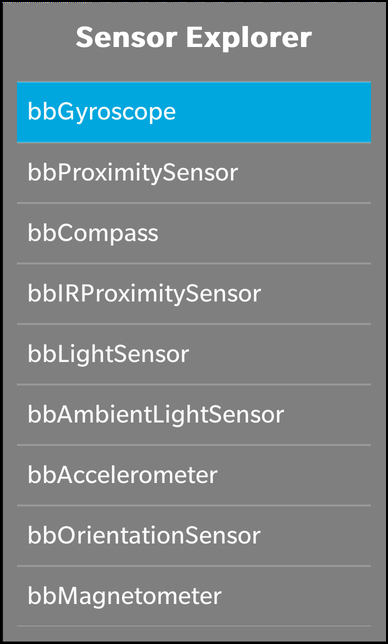
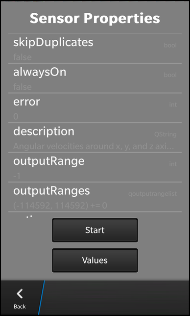

Sensor Explorer Example
Files:
- sensors/sensorexplorer/assets/ReadingPage.qml
- sensors/sensorexplorer/assets/SensorPage.qml
- sensors/sensorexplorer/assets/main.qml
- sensors/sensorexplorer/src/SensorExplorer.cpp
- sensors/sensorexplorer/src/SensorExplorer.hpp
- sensors/sensorexplorer/src/main.cpp
- sensors/sensorexplorer/sensorexplorer.pro
- sensors/sensorexplorer/translations/sensorexplorer.pro
Description
The Sensor Explorer example demonstrates how to introspect all available sensors of a device.
  
Overview
In this example we'll learn how to use the QSensor and QSensorReading classes together with the meta-object system of Qt to introspect all available sensors of the device and show their current sensor data.
The UI
The UI of this sample application consists of three screens. The first screen shows the list of all available sensors of the device. When the user selects on of the sensors the second screen is presented, which shows all properties of the sensor with name, type and current value. The user can start the sensor in this screen and use the 'Values' button to show up the third screen. The third screen shows now all the values that are read from the sensor and they are updated whenever the hardware sensor updates its data.
The business logic of the application is encapsulated in the SensorExplorer class which is made available to the UI under the name '_sensorExplorer'.
ListView { horizontalAlignment: HorizontalAlignment.Fill layoutProperties: StackLayoutProperties { spaceQuota: 1 } dataModel: _sensorExplorer.sensorsModel onTriggered: { clearSelection(); select(indexPath); } onSelectionChanged: { if (selected) { _sensorExplorer.setCurrentSensor(indexPath) navigationPane.push(sensorPage.createObject()); } } attachedObjects: [ ComponentDefinition { id: sensorPage source: "SensorPage.qml" } ] }
Beside a title label, the first page contains a ListView that shows all the available sensors. The list of sensors is provided by a DataModel that is made available by the SensorExplorer's 'sensorModel' property. When the user selects a sensor, we invoke the setCurrentSensor method of the SensorExplorer object. That will trigger the SensorExplorer to update all meta-data and values for this sensor. Additionally we push the sensor page (2nd screen) on the navigation pane.
ListView { horizontalAlignment: HorizontalAlignment.Fill layoutProperties: StackLayoutProperties { spaceQuota: 1 } dataModel: _sensorExplorer.sensorPropertiesModel listItemComponents: [ ListItemComponent { type: "item" StandardListItem { title: ListItemData.name status: ListItemData.type description: ListItemData.value } } ] }
The sensor page contains a ListView as well, which shows all properties of the selected sensor. The list of properties is provided by a DataModel that is made available by the SensorExplorer's 'sensorPropertiesModel' property. This time we use a StandardListItem control for the list view entries and assign the name, type and value of the property to its labels.
Button { text: _sensorExplorer.sensorActive ? qsTr ("Stop") : qsTr ("Start") onClicked: _sensorExplorer.sensorActive = !_sensorExplorer.sensorActive } Button { text: qsTr ("Values") onClicked: { navigationPane.push(readingPage.createObject()); } attachedObjects: [ ComponentDefinition { id: readingPage source: "ReadingPage.qml" } ] }
The first button in the sensor page allows the user to start or stop the sensor. The text of this button depends on the 'sensorActivity' property of the SensorExplorer and clicking the button will toggle this property.
If the user presses the 'Values' button, we push the reading page (3rd screen) on the navigation pane.
ListView { horizontalAlignment: HorizontalAlignment.Fill layoutProperties: StackLayoutProperties { spaceQuota: 1 } dataModel: _sensorExplorer.readingPropertiesModel listItemComponents: [ ListItemComponent { type: "item" StandardListItem { title: ListItemData.name status: ListItemData.type description: ListItemData.value } } ] }
The reading page contains a similar list view like the sensor page, just that it uses the SensorExplorer's 'readingPropertiesModel' as data model.
SensorExplorer
The SensorExplorer class encapsulates the business logic of the application. It uses the QSensor and QSensorReading classes internally to retrieve the available sensors and their properties. The data are provided to the UI through properties of type DataModel. An additional property 'sensorActive' defines whether the selected sensor is active or not.
class SensorExplorer : public QObject, public QSensorFilter { Q_OBJECT Q_PROPERTY(bb::cascades::DataModel* sensorsModel READ sensorsModel CONSTANT) Q_PROPERTY(bb::cascades::DataModel* sensorPropertiesModel READ sensorPropertiesModel CONSTANT) Q_PROPERTY(bb::cascades::DataModel* readingPropertiesModel READ readingPropertiesModel CONSTANT) Q_PROPERTY(bool sensorActive READ sensorActive WRITE setSensorActive NOTIFY sensorActiveChanged) public: SensorExplorer(QObject *parent = 0); bool filter(QSensorReading *reading); bb::cascades::DataModel* sensorsModel() const; bb::cascades::DataModel* sensorPropertiesModel() const; bb::cascades::DataModel* readingPropertiesModel() const; bool sensorActive() const; void setSensorActive(bool active); public Q_SLOTS: void setCurrentSensor(const QVariantList &indexPath); Q_SIGNALS: void sensorActiveChanged(); private Q_SLOTS: void loadSensors(); void sensorChanged(); private: void loadSensorProperties(); void loadReadingProperties(); bb::cascades::GroupDataModel *m_sensorsModel; bb::cascades::GroupDataModel *m_sensorPropertiesModel; bb::cascades::GroupDataModel *m_readingPropertiesModel; QSensor *m_sensor; qtimestamp m_lastReading; };
Inside the constructor of SensorExplorer we initialize the data models with GroupDataModels, so that we can store the sensor and reading data inside them. We also switch of their grouping feature, since we don't want to show headers in the ListView. For the 'readingPropertiesModel' we specify a sort key, since we want to look up data in this model later on for on-the-fly updates of the values. At the end we trigger the initial load of the available sensors.
SensorExplorer::SensorExplorer(QObject *parent) : QObject(parent) , m_sensorsModel(new GroupDataModel(this)) , m_sensorPropertiesModel(new GroupDataModel(this)) , m_readingPropertiesModel(new GroupDataModel(QStringList() << QLatin1String("position"), this)) , m_sensor(0) , m_lastReading(0) { // Don't use grouping in the models m_sensorsModel->setGrouping(ItemGrouping::None); m_sensorPropertiesModel->setGrouping(ItemGrouping::None); m_readingPropertiesModel->setGrouping(ItemGrouping::None); // Trigger the initial load of the available sensors loadSensors(); }
Inside loadSensors() we clear the content of the sensor model before we fill the model with new sensor data. For that we retrieve the information about all available sensor types (on each device their might be a different subset of supported sensors) and about all instances for these types (there might be multiple temperature sensors for example). After we checked that the sensor is functional, we add a new entry to the sensor model with the identifier and type of the sensor.
void SensorExplorer::loadSensors() { // Clear out anything that's in there now m_sensorsModel->clear(); // Iterate over all available sensor types foreach (const QByteArray &type, QSensor::sensorTypes()) { // Retrieve all identifiers for the current sensor type foreach (const QByteArray &identifier, QSensor::sensorsForType(type)) { if (type == "QHolsterSensor") continue; // prevent crash // Don't put in sensors we can't connect to QSensor sensor(type); sensor.setIdentifier(identifier); if (!sensor.connectToBackend()) { qDebug() << "Couldn't connect to" << identifier; continue; } // Create a new model entry for the current sensor instance ... QVariantMap sensorEntry; sensorEntry["identifier"] = identifier; sensorEntry["type"] = QString::fromLatin1(type); // ... and add it to the model m_sensorsModel->insert(sensorEntry); } } }
If the user selects now one entry of that sensor model in the UI, the setCurrentSensor() method is invoked.
Inside this method we retrieve the identifier and type of the selected sensor and create a new QSensor instance from these data. Afterwards we trigger the propagation of the sensor properties and reading properties to the models.
void SensorExplorer::setCurrentSensor(const QVariantList &indexPath) { // Sanity check if (indexPath.isEmpty()) return; // Clear out anything that's in there now if (m_sensor) { delete m_sensor; m_sensor = 0; } m_sensorPropertiesModel->clear(); m_readingPropertiesModel->clear(); // Retrieve the selected sensor description from the model const QVariantMap sensorEntry = m_sensorsModel->data(indexPath).toMap(); const QByteArray type = sensorEntry["type"].toString().toLatin1(); const QByteArray identifier = sensorEntry["identifier"].toString().toLatin1(); // Connect to the sensor so we can probe it m_sensor = new QSensor(type, this); connect(m_sensor, SIGNAL(readingChanged()), this, SLOT(sensorChanged())); connect(m_sensor, SIGNAL(activeChanged()), this, SIGNAL(sensorActiveChanged())); m_sensor->setIdentifier(identifier); if (!m_sensor->connectToBackend()) { delete m_sensor; m_sensor = 0; qWarning() << "Can't connect to the sensor!"; return; } // Trigger the load of the sensor and reading properties loadSensorProperties(); loadReadingProperties(); }
To fill the sensor properties model, we use the Qt's meta-object system for introspection. The QMetaObject of the QSensor instance allows us to iterate over all the properties that are provided by the sensor and retrieve their names, types and current values. For each property we create a new entry in the 'sensorPropertiesModel'.
void SensorExplorer::loadSensorProperties() { // Sanity check if (!m_sensor) return; // Retrieve the meta data for the QSensor object ... const QMetaObject *metaObject = m_sensor->metaObject(); const int firstProperty = QSensor::staticMetaObject.propertyOffset(); // ... and iterate over all its properties for (int i = firstProperty; i < metaObject->propertyCount(); ++i) { const QString name = QString::fromLatin1(metaObject->property(i).name()); if (ignoreProperty(name)) // hide certain properties continue; const QString type = typeName(metaObject, i); const QVariant value = metaObject->property(i).read(m_sensor); // Create a new model entry for the current property ... QVariantMap sensorPropertiesEntry; sensorPropertiesEntry["type"] = type; sensorPropertiesEntry["name"] = name; sensorPropertiesEntry["value"] = convertValue(type, value); // ... and add it to the model m_sensorPropertiesModel->insert(sensorPropertiesEntry); } }
Filling the reading properties model is similar to the previous method, just that we use the QMetaObject of the sensor's QSensorReading object.
void SensorExplorer::loadReadingProperties() { const QSensorReading *reading = m_sensor->reading(); // Retrieve the meta data for the QSensorReading object ... const QMetaObject *metaObject = reading->metaObject(); const int firstProperty = QSensorReading::staticMetaObject.propertyOffset(); // ... and iterate over all its properties for (int i = firstProperty; i < metaObject->propertyCount(); ++i) { const int position = i - firstProperty; const QString type = typeName(metaObject, i); const QString name = QString::fromLatin1(metaObject->property(i).name()); const QVariant value = metaObject->property(i).read(reading); // Create a new model entry for the current property ... QVariantMap readingEntry; readingEntry["position"] = position; readingEntry["type"] = type; readingEntry["name"] = name; readingEntry["value"] = convertValue(type, value); // ... and add it to the model m_readingPropertiesModel->insert(readingEntry); } }
Whenever the selected sensor reports new data, the filter method is invoked. To limit the number of updates in the UI, we check for the time that has passed since the last invocation. The rest of the method is similar to loadReadingProperties() with the difference that we do not insert a new entry in the model but update an existing one.
bool SensorExplorer::filter(QSensorReading *reading) { // Limit update interval to 1 second if ((reading->timestamp() - m_lastReading) < 1000000) return false; m_lastReading = reading->timestamp(); // Retrieve the meta data for the QSensorReading object ... const QMetaObject *metaObject = reading->metaObject(); const int firstProperty = QSensorReading::staticMetaObject.propertyOffset(); // ... and iterate over all its properties for (int i = firstProperty; i < metaObject->propertyCount(); ++i) { const int position = i - firstProperty; // Retrieve the type, name and value of the current property const QString type = typeName(metaObject, i); const QString name = QString::fromLatin1(metaObject->property(i).name()); const QVariant value = metaObject->property(i).read(reading); // Fill the values in a new entry for the model QVariantMap readingEntry; readingEntry["position"] = position; readingEntry["type"] = type; readingEntry["name"] = name; readingEntry["value"] = convertValue(type, value); // Find the entry in the model that represents the current property (based on the position) ... const QVariantList indexPath = m_readingPropertiesModel->find(QVariantList() << position); // ... and update the entry with the new data m_readingPropertiesModel->updateItem(indexPath, readingEntry); } return false; }